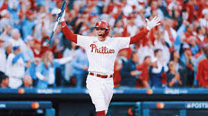

For the past three years I have worked at a restraunt in my hometown.
I started as a hostess and am now a food runner. I loved working in a restraunt,
however, this summer I am looking for an internship in Philly. I am interested in
working with the Philadelphia Phillies. I would love to capture media for their socials
and websites. There are so many options I want to explore. I am lucky to be so close
to a city with many opportunities.

Education
I started attending
Elon University
in 2021. I am working towards a BFA in Cinema and Television
Arts. I am minoring in History. My goal is to one day direct movies about
moments in history. Before Elon, I attended Radnor High School in Wayne, Pennsylvania.
I was a member of the national honor society.
Involvement
I am a membber of Elon After Hours, an on-campus Television
show. It is sort of like the Jimmy Fallon Tonight Show. I hope to get more involved
in the club by earning a position of producer or director. I am also in the
sorority Zeta Tau Alpha. Currently, I am the assistant to the chair of philanthropy.
My hope is that one day I can fulfull the position of philanthropy. ZTA's
philanthropy is breast cancer education and awareness, something I am very passionate
about.